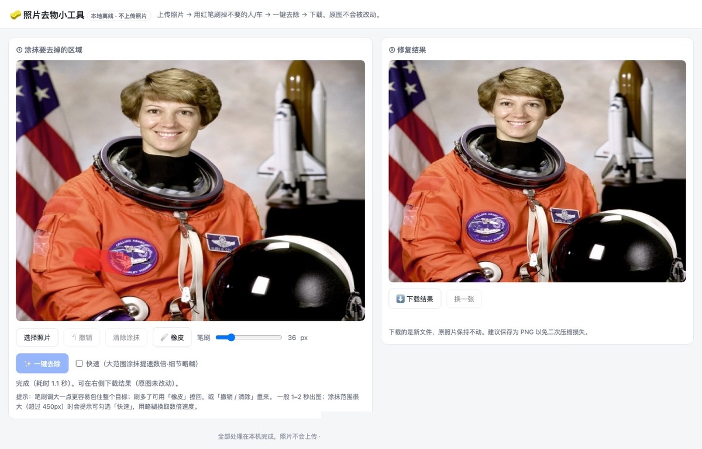

旅游照拍得挺好，就是画面中间站着个不认识的人。拿红笔涂一下，点一下，一秒后它就没了——模型在原处补出沙滩、栏杆、树叶。整个过程在你这台电脑上跑，照片不上传，也不要账户。
为了这一件事，常见的四条路都不太顺：
两者的差别不是功能多少，是有没有必要为一次需求去学一套软件。
把照片拖进窗口
红笔涂掉多余的人和物
一键去除，右侧出结果
涂多了可以用橡皮擦回，也有撤销和清除；原图始终是只读的。

速度取决于你涂了多大一块。程序按你涂的范围自动调整处理区域——涂得小就轻量处理，涂得大才整体处理，不做无用功。
| 去掉一个路人、一个垃圾桶 | 涂掉一小片 → 约 1 秒 |
|---|---|
| 大件（勾选「快速」） | 涂掉一大片 → 约 1.6 秒 |
| 同样大件，要更精细 | 逐块精修 → 约 15 秒 |
中高分辨率照片实测；你的机器会有差异。涂得很大时会提示勾「快速」——用略糊换数倍速度。
用的是本地预置的修复模型，不是"拿去上传再返回"的在线服务。
| 系统 | Windows 10 / 11（64 位） |
|---|---|
| 依赖 | 系统自带的网页组件（Win10 之后基本预装，缺了会引导安装） |
| 磁盘 | 约 250 MB |
| 运行环境 | 不需要独立显卡，普通电脑即可运行 |
| 不支持 | macOS、Linux、手机；视频与 RAW 需先转成图片 |
具体发货方式与价格以实际店铺页面为准。